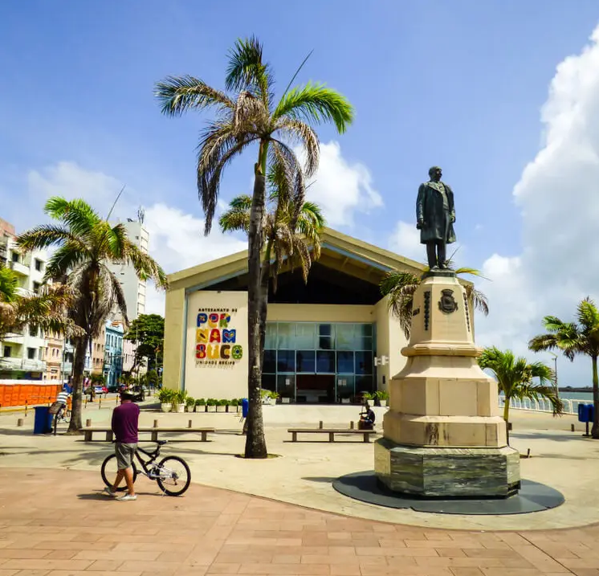
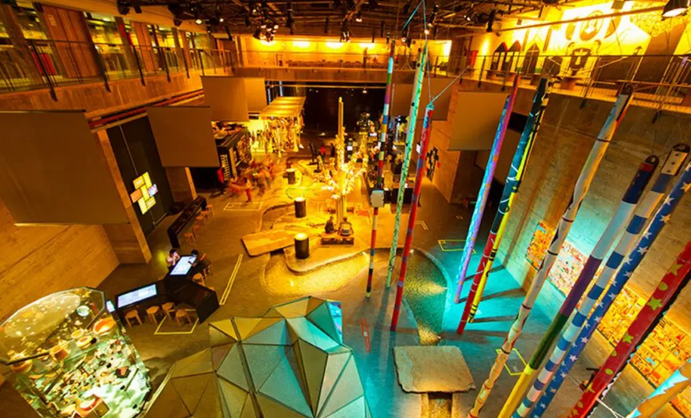
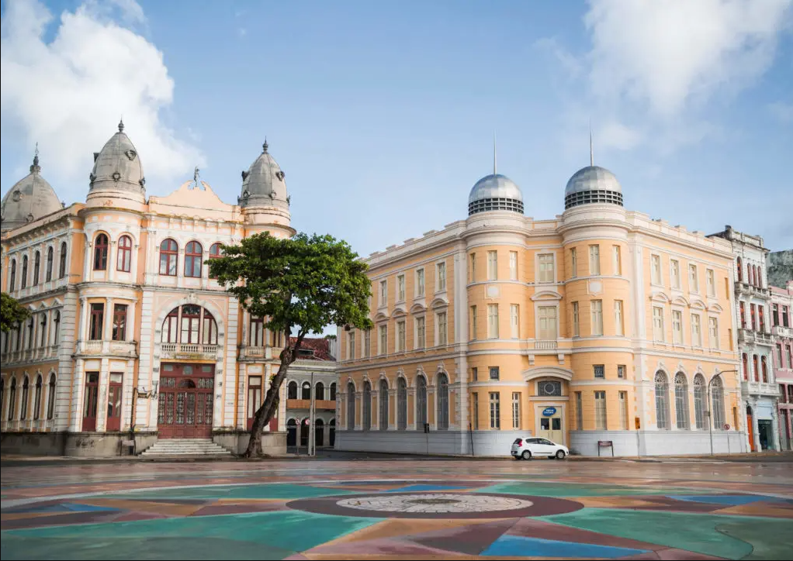

Principais pontos turísticos do Marco Zero

(Foto: Trip Advisor)
Centro de Artesanato de Pernambuco
(Foto: Quinto Andar)
Inaugurado em 2012, o Centro de Artesanato de Pernambuco rapidamente se tornou uma das referências da Praça do Marco Zero, tanto para turistas quanto para os moradores de Recife.
Localizado em um amplo galpão de 2,5 mil m², o espaço conta corredores amplos, vista privilegiada para o mar e mais de 25 mil peças à venda, feitas à mão por cerca de 1,8 mil artesãos de todos os cantos de Pernambuco.
O centro conta com divisões como sala de estar, quarto, sala de jantar e outros cômodos de uma casa, para que os visitantes possam visualizar como as peças artesanais poderiam ficar em seus lares. E as peças são feitas de matérias-primas das mais diversas, como renda, madeira, metal, cerâmica e vidro, entre outros.
Endereço: Av. Alfredo Lisboa, s/n – Bairro do Recife
Telefone: (81) 3183-3450
Funcionamento: Segunda a sábado, das 9h às 19h. Domingos, das 10h às 16h
Museu Cais do Sertão
(Foto: Quinto Andar)
Localizado em uma região de antigos armazéns do Porto do Recife, mais precisamente no Armazém 10, muito próximo da Praça do Marco Zero, o Museu Cais do Sertão conta com exposições temporárias e permanentes, que sempre trazem com referências à cultura do Sertão Nordestino, em especial ao grande homenageado do espaço: o músico Luiz Gonzaga.
Com uma arquitetura inovadora, o espaço busca oferecer aos seus visitantes uma experiência interativa e sensorial, numa imersão à cultura sertaneja do Nordeste em pleno litoral. E também oferece diversos tipos de cursos, aulas e palestras.
Endereço: Armazém 10, Av. Alfredo Lisboa, s/n – Bairro do Recife
Telefone: (81) 3182-8268
Funcionamento: Quinta e sexta, das 10h às 16h. Sábados, domingos e feriados, das 11h às 17h
Caixa Cultural Recife
(Foto: Bruno Lima | MTUR)
Em um prédio de estilo neoclássico datado de 1912 e projetado para ser a sede do Bank of London & South America Limited, funciona hoje a Caixa Cultural Recife.
Em 1977, o prédio foi adquirido e se tornou sede da Bolsa de Valores de Pernambuco e da Paraíba até 2006, quando foi comprado pela Caixa Econômica Federal.
E justamente no ano do centenário do prédio, em 2021, foi inaugurada a Caixa Cultural Recife, que conta com galerias de arte, sala multimídia, duas salas para oficinas de arte-educação e um teatro com 96 lugares.
Endereço: Av. Alfredo Lisboa, 505 – Bairro do Recife
Telefones: (81) 3425-1915 (Informações e Bilheteria)
Funcionamento: Terça a domingo, das 10h às 18h.
Associação Comercial de Pernambuco
Fundada em 1839, a Associação Comercial De Pernambuco funciona de forma ininterrupta em um belíssimo prédio de arquitetura clássico-eclética, localizado de frente para a Praça do Marco Zero e ao lado da Caixa Cultural Recife, como mostra a imagem acima.
A construção imponente é tombada pelo Instituto do Patrimônio Histórico e Artístico Nacional (IPHAN) e é pano de fundo, ao lado de seu prédio vizinho, para as fotos mais clássicas que se podem tirar da região, por sua beleza e importância arquitetônica.